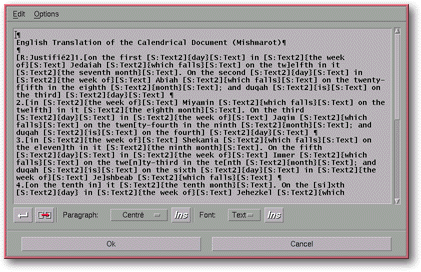
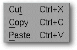
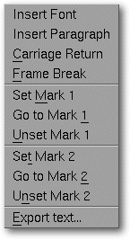
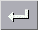
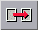

<!-- Documentation Xclamation (c)1994-2000 AXENE contact axene@axene.org>
<html>

<head>
<title>Text Editor</title>
</head>

<body BGCOLOR="#FFFFFF" BACKGROUND="Images/back.gif" TEXT="#000000">

<p ALIGN="right">  </p>

<p><br>
<br>
The text editor creates or modifies a frame's text. To access this editor only one frame
may be selected in the active document and this frame must either be empty or already
contain text. There are three ways to open the editor: through the <a HREF="HBar_Text.html#editor_icon">first button of the text manager's horizontal tool bar</a>,
through the <a HREF="Menu_Context.html#cm_frame_empty">empty frame's contextual menu</a>,
or through the <a HREF="Menu_Context.html#cm_editor">text frame's contextual menu</a>. <br>
<br>
</p>

<hr>

<p align="center"><br>
 <br>
<small><i>Screen shot: Text Editor </i></small></p>

<p><br>
</p>

<hr>

<p><br>
</p>
<a NAME="menu_bar">

<h3>Menu Bar:</h3>
</a>

<ul>
  <li><a NAME="edition_menu">The <i>&quot;Edit&quot;</i> menu contains three entries
    pertaining to the clipboard: <p align="center"> </p>
    <ol>
      <li></a><a NAME="cut_menu_entry"><i>&quot;Cut&quot;</i> saves the selected text zone to the
        clipboard then deletes the original text from the editor. </a><br>
        &nbsp;</li>
      <li><a NAME="copy_menu_entry"><i>&quot;Copy&quot;</i> saves the selected text zone to the
        clipboard without deleting the original text from the editor. </a><br>
        &nbsp;</li>
      <li><a NAME="paste_menu_entry"><i>&quot;Paste&quot;</i> affixes the saved text block from
        the most recent <i>&quot;cut&quot;</i> or <i>&quot;copy&quot;</i> command at the location
        of the text cursor. </a><br>
        &nbsp;</li>
    </ol>
  </li>
  <li><a NAME="options_menu">The <i>&quot;Options&quot;</i> menu offers different text
    management options: </a><p align="center"> </p>
    <ol>
      <li><a NAME="insert_font_menu_entry"><i>&quot;Insert Font&quot;</i> has the same function as
        the </a><a HREF="Box_Editor.html#font_ins_icon">second <i>&quot;Ins&quot;</i> button</a>. <br>
        &nbsp;</li>
      <li><a NAME="insert_paragraph_menu_entry"><i>&quot;Insert Paragraph&quot;</i> has the same
        function as the </a><a HREF="Box_Editor.html#paragraph_ins_icon">first <i>&quot;Ins&quot;</i>
        button</a>. <br>
        &nbsp;</li>
      <li><a NAME="insert_new_line_menu_entry"><i>&quot;Return&quot;</i> has the same function as
        the </a><a HREF="Box_Editor.html#new_line_icon">first button</a> on the bottom tool-bar. <br>
        &nbsp;</li>
      <li><a NAME="insert_frame_break_menu_entry"><i>&quot;Frame Break&quot;</i> has the same
        function as the </a><a HREF="Box_Editor.html#frame_break_icon">second button</a> on the
        bottom tool-bar. <br>
        &nbsp;</li>
      <li><a NAME="drop_mark_menu_entry"><i>&quot;Set Mark 1&quot;</i> or <i>&quot;Set Mark
        2&quot;</i> tags the cursor's position in the text with one of these two marks. The marks
        cannot be seen but they indicate the position of the cursor. </a><br>
        &nbsp;</li>
      <li><a NAME="go_to_mark_menu_entry"><i>&quot;Go to Mark 1&quot;</i> or <i>&quot;Go to Mark
        2&quot;</i> positions the text cursor on the spot where the two respective marks have been
        placed. </a><br>
        &nbsp;</li>
      <li><a NAME="destroy_mark_menu_entry"><i>&quot;Unset Mark 1&quot;</i> or <i>&quot;Unset Mark
        2&quot;</i> removes the respective marks. </a><br>
        &nbsp;</li>
      <li><a NAME="export_text_menu_entry"><i>&quot;Export text...&quot;</i> calls up the '</a><a HREF="Box_FS_Export_Text.html">Export text</a>' file selector, allowing the text in a file
        to be saved separately. <br>
        &nbsp;</li>
    </ol>
  </li>
</ul>

<p><a NAME="text_textfield"></a> </p>

<h3>Text Areas:</h3>

<ul>
  <p>The text field containing the selected frame's text. Text enrichments (font styles,
  specifications, frame breaks, returns and paragraph endings) appear in the editor as tags
  but are not displayed in the frame. A tag acts as a single character: to delete it,
  position the cursor in front of it and push the <i>&quot;Del&quot;</i> key. <br>
  To insert tags, use the menu bar or the buttons on the bottom tool-bar. <br>
  The Selected area is like all other text fields, notably in that it is possible to use
  accented characters from the <b>ISO Latin 1 character list</b>, whether using the
  corresponding keyboard keys or the <a HREF="Keyboard.html#special_car">composed characters</a>.
  </p>
</ul>

<p><br>
</p>

<h3>Lower Control Bar:</h3>

<ul>
  <li> <a NAME="new_line_icon">The first button on the
    bar <b>inserts a return</b> without changing paragraphs in the text. This is reflected in
    the Selected area by inserting the &quot;<tt>[CR]</tt>&quot; tag. This <i>&quot;Line
    Return&quot;</i> is different from the return and enter keys because it does not signal
    the end of a paragraph; this command makes it possible to justify the last line of a
    paragraph or a single line of a title. </a><br>
    &nbsp;</li>
  <li> <a NAME="frame_break_icon">The second button on
    the bar <b>inserts a frame break</b> in the text. This is reflected in the selected area
    by the &quot;<tt>[Frame Break]</tt>&quot; tag. When several frames are linked it is not
    necessary to wait for a frame to be filled before allowing the text to flow to the next
    frame in the chain if a <i>&quot;frame break&quot;</i> is used. </a><br>
    &nbsp;</li>
  <li><a NAME="paragraph_list">The <i>&quot;Format&quot;</i> roll-down menu contains the list
    of specifications defined in the '</a><a HREF="Box_Paragraph.html">Format</a>' dialog box.
    Clicking on the first button, <i>&quot;Ins&quot;</i>, just to the right of the list, or in
    the <i>&quot;Options / Insert format&quot;</i> menu <b>selects formatting</b> to be
    inserted in the text. When the text editor is opened, the format selected from this list
    will be effective from the beginning of the text. <br>
    &nbsp;</li>
  <li><a NAME="paragraph_ins_icon">The first <i>&quot;Ins&quot;</i> button <b>inserts the
    selected format</b> from the roll-down menu into the text. This is reflected in the
    selected area by insertion of the &quot;<tt>¶[R:format&nbsp;name]</tt>&quot; tag. A
    format specification forces a paragraph break because it acts on one or more paragraphs in
    their entirety. </a><br>
    &nbsp;</li>
  <li><a NAME="font_list">The <i>&quot;Style&quot;</i> roll-down menu contains the font style
    list defined in the '</a><a HREF="Box_Font.html">Font Style</a>' composition dialog box.
    Clicking on the second <i>&quot;Ins&quot;</i> button just to the left of the list or in
    the <i>&quot;Options / Insert Style&quot;</i> menu selects the font to be inserted in the
    text. When the text editor is opened, the font selected from the menu will take effect
    from the beginning of the text. <br>
    &nbsp;</li>
  <li><a NAME="font_ins_icon">The second <i>&quot;Ins&quot;</i> button <b>inserts the selected
    font</b> in the text from the roll-down menu. This is reflected in the selected area the
    &quot;<tt>[S:style&nbsp;name]</tt>&quot; tag. A font is applied from the point of
    insertion to the following style. </a><br>
    &nbsp;</li>
</ul>

<p>&nbsp;</p>

<h3>Lower portion of the editor:</h3>

<ul>
  <li><a NAME="button_ok"><i>&quot;Ok&quot;</i> <b>confirms all changes</b> in the text and
    closes the editor. </a><br>
    &nbsp;</li>
  <li><a NAME="button_cancel"><i>&quot;Cancel&quot;</i> closes the editor and <b>keeps the
    initial text</b>. </a><br>
    &nbsp;</li>
</ul>

<p><br>
</p>

<hr>

<p ALIGN="right"></p>
</body>
</html>
